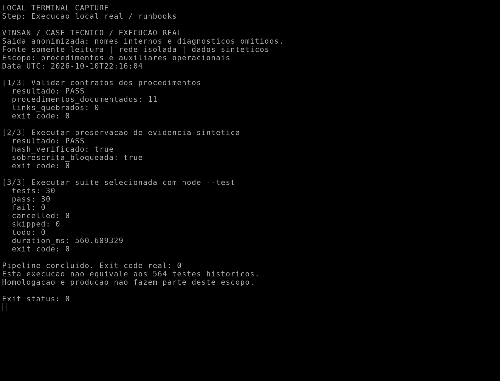
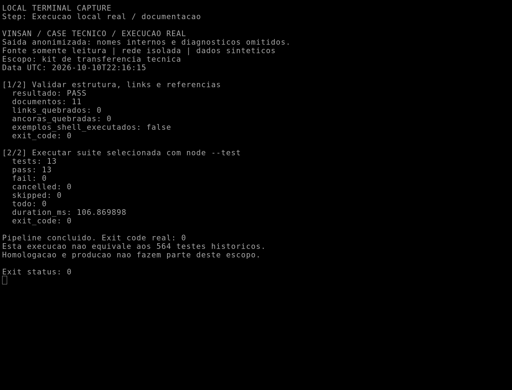
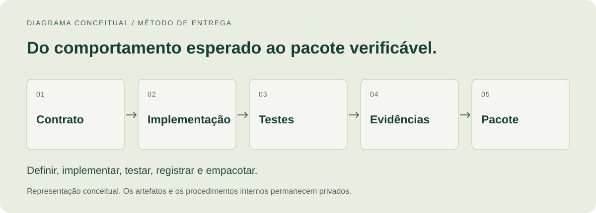

Autenticação, controle de acesso e entrega verificável
Da definição de contratos à validação local: uma entrega de back-end com componentes de identidade, controles de acesso e evidências para apoiar a integração por outra equipe.
Contexto
Projeto para cliente · Identidade preservada
Minha atuação
Desenvolvimento de software, integração, testes e documentação técnica
Estado comprovado
Entrega técnica validada em ambiente de engenharia
O desafio
O desafio era preparar uma base de autenticação integrável a uma aplicação de cliente, com responsabilidades explícitas entre identificar uma pessoa, permitir uma ação e executar a regra de negócio. Além de funcionar nos caminhos esperados, a entrega precisava demonstrar como tratava entradas inválidas e falhas, e oferecer documentação para quem daria continuidade à integração.
Minha contribuição
Trabalhei nos contratos da API, nos componentes de sessão e validação, nos testes de integração e segurança e na preparação dos materiais de entrega. O recorte abaixo destaca três frentes que conectam implementação, verificação e transferência de conhecimento.
TypeScript
Node.js
Fastify
OpenAPI
Testes automatizados
Docker
01 / O TRABALHO
Três frentes de contribuição.
01
Contratos e ciclo de sessão
Organizar o comportamento da API antes de acoplar a implementação a um provedor específico.
Desenvolvi contratos OpenAPI e componentes em TypeScript para os fluxos de sessão, renovação e revogação. Um fluxo de revogação foi integrado a um provedor de identidade em ambiente local, com adapters e testes de contrato para separar regras da aplicação de particularidades do provedor.
Contratos de entrada, resposta e erro documentados.
Rotação e detecção de reutilização de credenciais de renovação verificadas em testes.
Cenários de expiração, revogação e concorrência cobertos na bancada de engenharia.
Valor para a equipe: O integrador recebe comportamentos definidos e exemplos verificáveis para conectar a aplicação.
02
Validação e autorização separadas
Uma identidade válida não concede, por si só, acesso a qualquer recurso ou operação.
Implementei componentes independentes de validação de requisições e sua composição HTTP. Os testes exploram a validade das credenciais, a vinculação da prova à requisição, tentativas de reutilização e decisões de autorização. As regras específicas de negócio e a integração ao ambiente real permanecem sob responsabilidade da equipe do cliente.
Verificações de tokens e provas de posse em cenários locais positivos e negativos.
Separação entre autenticação, permissão de rota e autorização de recurso.
Rejeição da operação quando uma dependência necessária à decisão de segurança falha.
Valor para a equipe: As decisões de acesso ficam explícitas e podem ser verificadas antes da integração externa.
03
Evidências e continuidade da entrega
Preparar o software para ser testado, revisado e compreendido fora do ambiente de desenvolvimento original.
Estruturei regressões automatizadas, verificações de segurança, procedimentos operacionais e um kit de transferência de conhecimento. Componentes da entrega foram reexecutados em ambiente isolado, e a integridade do pacote foi conferida. O histórico de tentativas foi preservado, incluindo falhas corrigidas antes da revisão final.
Pacote de entrega com inventário, hashes e instruções de verificação.
Runbooks exercitados localmente com dados sintéticos.
Documentação revisada a partir de exercícios de compreensão e validação de referências.
Valor para a equipe: A equipe que recebe a entrega tem uma rota de leitura e evidências para orientar sua avaliação.
Abstração técnica criada para este case. Não representa a topologia, a ordem interna de componentes ou a configuração do cliente.
Contrato antes da integração
OpenAPI e testes de contrato tornam as expectativas de entrada, saída e falha explícitas. Adapters isolam as particularidades do provedor usado na bancada.
Falhar sem conceder acesso
Quando não é possível concluir uma verificação de segurança necessária, a operação é recusada. Essa propriedade foi exercitada com falhas controladas de dependências.
Resultado ligado à sua evidência
Manifestos e hashes permitem relacionar o pacote aos registros de validação. Uma execução local aprovada continua sendo evidência local, com limites documentados.
03 / EVIDÊNCIAS HISTÓRICAS
Validação local documentada.
Registros históricos de reexecução e revisão técnica final consultados para este case. A suíte histórica de 564 testes não foi reexecutada integralmente para o portfólio; as novas execuções selecionadas estão descritas separadamente abaixo.
Extrato anonimizado de registros históricos de validação local. Esta página apresenta uma síntese documental; não é a interface do cliente nem uma nova execução dessa suíte.
564 / 564testes aprovados na execução histórica selecionada
0falhas registradas
0testes ignorados
Suíte selecionada de regressão da entrega
Ambiente de engenharia isolado, com dados sintéticos
Verificação
Resultado registrado
Leitura do resultado
Regressão selecionada
564 / 564 aprovados
Reexecução de componentes da entrega em ambiente isolado.
Verificações de segurança
Aprovadas no escopo verificado
Análise estática, dependências, busca de segredos e inventário de componentes.
Integridade da entrega
Verificada
Manifestos, hashes e comparação dos artefatos de entrega.
Homologação e produção
Não comprovadas
Dependem da avaliação e autorização no ambiente do cliente.
A contagem descreve essa suíte e essa execução. Não mede a cobertura total do sistema, não soma execuções anteriores e não representa certificação.
EXECUÇÃO LOCAL / REGISTRO DESTA REVISÃO
Procedimentos operacionais e preservação de evidências
Pipeline real executado em 10/10/2026 sobre uma cópia do pacote aceito: validação dos contratos, procedimento de preservação de evidência sintética e suíte selecionada de testes.
30 testes de contratos e auxiliares operacionais. Inclui um procedimento com escrita temporária, conferência de hash e recusa de sobrescrita. Os testes de fechamento também verificam registros históricos; não são a reexecução dos onze exercícios operacionais.
30/30 testes aprovados · 0 falhas · saída 0

Captura nativa de terminal após execução real. Saída filtrada para remover nomes internos e diagnósticos; os números vêm dos processos executados.
EXECUÇÃO LOCAL / REGISTRO DESTA REVISÃO
Pipeline de validação da documentação
Validação real da estrutura do kit de transferência, links, âncoras e referências, seguida pela suíte de testes do validador.
13 testes de documentação. O validador analisa os exemplos de comandos como texto; não executa os comandos operacionais descritos nos documentos.
13/13 testes aprovados · 0 falhas · saída 0

Captura nativa de terminal da execução de 10/10/2026, com saída anonimizada. Zero links e âncoras quebrados no contexto verificado.
04 / RESULTADO E LIMITES
Preparação para avaliação, com limites explícitos.
O resultado documentado é uma entrega técnica com componentes executáveis, contratos, testes, registros de validação e materiais de transferência. A revisão final consultada aprova o fechamento técnico autônomo e a preparação para homologação; não registra homologação do cliente nem autorização de produção.

Síntese do método de entrega. Os artefatos e os procedimentos internos permanecem privados.
Os resultados apresentados pertencem à bancada de engenharia e à suíte selecionada do pacote.
A integração com sistemas reais, a infraestrutura definitiva e a autorização de produção dependem do cliente.
O case não declara certificação FAPI, Open Finance, auditoria independente ou ausência de vulnerabilidades.
Nome do cliente, código privado, endpoints, configurações, topologia e procedimentos internos não integram este material público.
Os diagramas são abstrações técnicas criadas para este case. As capturas de terminal mostram execuções reais selecionadas, com saída anonimizada. O relatório dos 564 testes é um extrato histórico separado, sem equivalência com a nova execução.